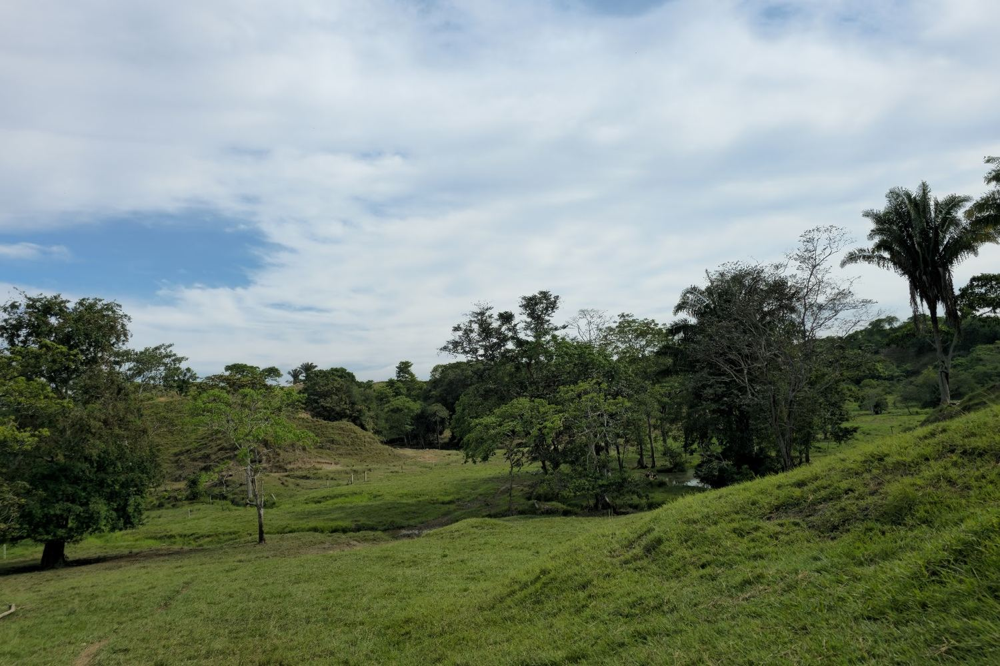
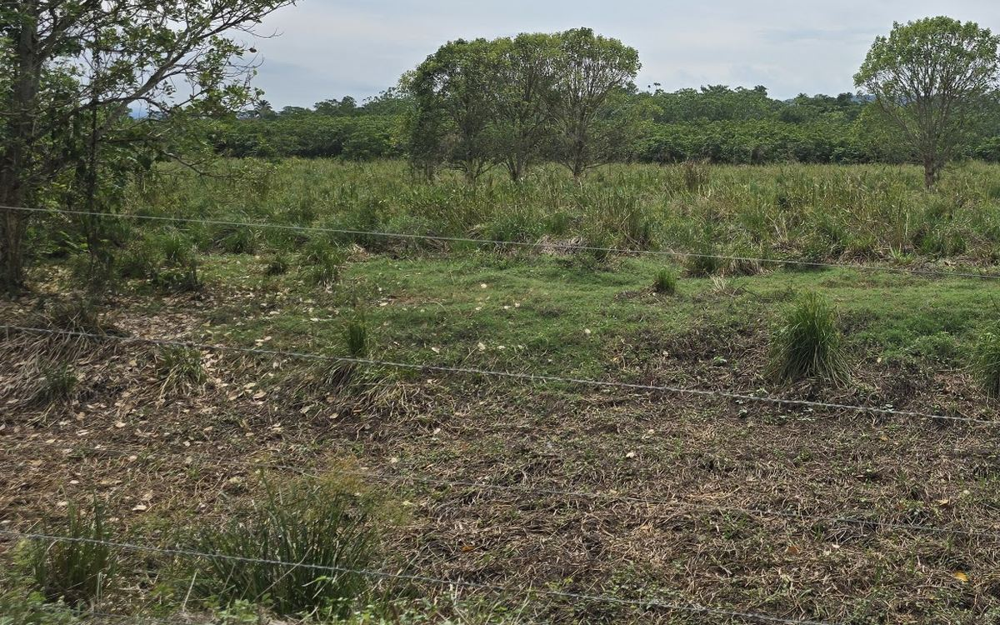
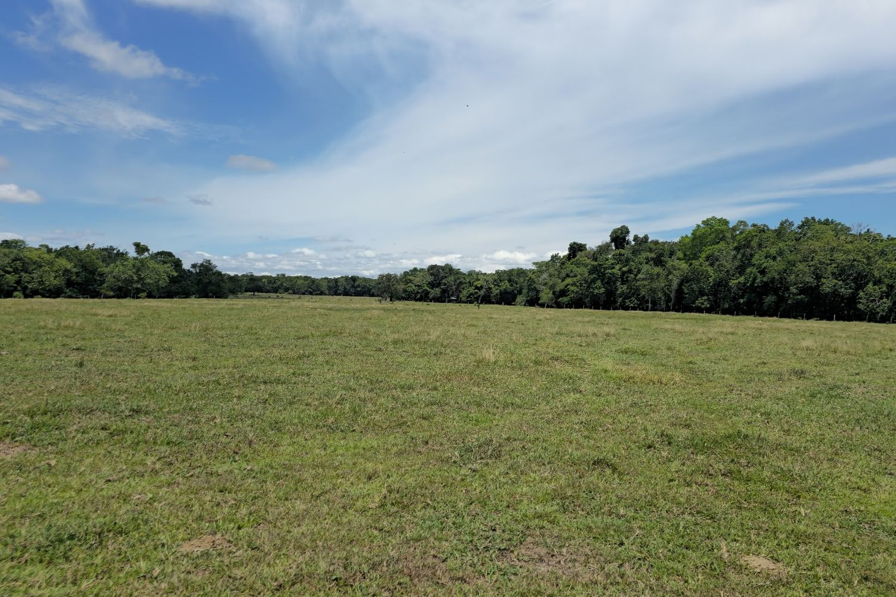

¿Busca una propiedad con otras características?
Manejamos propiedades ganaderas en venta privada que no se publican. Cuéntenos por WhatsApp qué busca y le mostramos las que le sirvan.
Portafolio · Colombia
Cada finca tiene su página con área, aguas, pastos, corrales, casas, acceso y precio. Toque la que le interese y coordinamos la visita por WhatsApp.

Pastos angleton y brachiaria, dos quebradas y reservorios de agua. Corrales reformados y báscula bajo techo. Casa principal amoblada, con piscina, y cuatro casas más.

Plana, con 1,3 km de frente sobre la Ruta del Sol. 110 potreros en brachiaria, angleton y mombasa. Corral grande y nuevo, casa principal amoblada y dos campamentos.

Tierra plana con vegas del río Carare, sobre la vía principal a Bucaramanga. Apta para cría, levante y ceba, y para agricultura. Casa principal, casa de mayordomo, corral techado y báscula.
Precios por hectárea, en millones de pesos colombianos (COP). Ubicación exacta, linderos y papeles se comparten con el interesado por WhatsApp.
Compradores y dueños
Muchas fincas se ofrecen primero a quien ya nos contó qué busca. Y si usted tiene una para vender, la trabajamos en privado.
Manejamos propiedades ganaderas en venta privada que no se publican. Cuéntenos por WhatsApp qué busca y le mostramos las que le sirvan.
Le escribimos por WhatsApp cuando entre una propiedad nueva al portafolio. Sin publicidad ni mensajes de terceros.
Venta privada: sin publicar su ubicación ni su nombre, visitas solo con su aprobación y acompañamiento hasta la escritura. Buscamos fincas y haciendas ganaderas en Colombia, de preferencia desde 300 hectáreas.
Quiero vender mi fincaContacto
Escríbanos por WhatsApp, indíquenos cuál finca le interesa y coordinamos la visita.
+57 300 490 3639 · Le atiende un asesor de Hierro & Tierra.